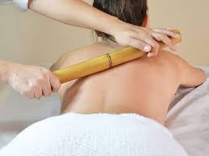
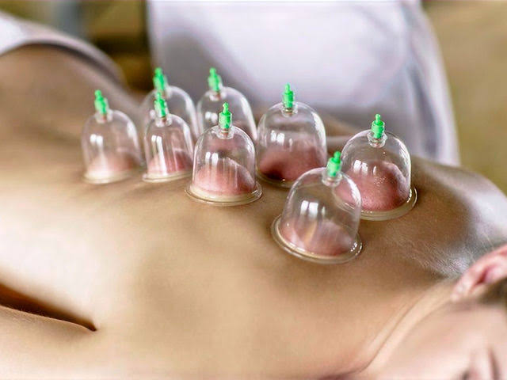
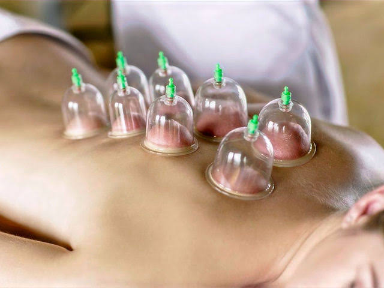
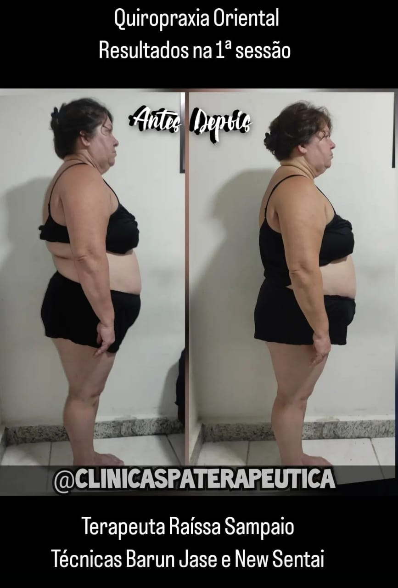
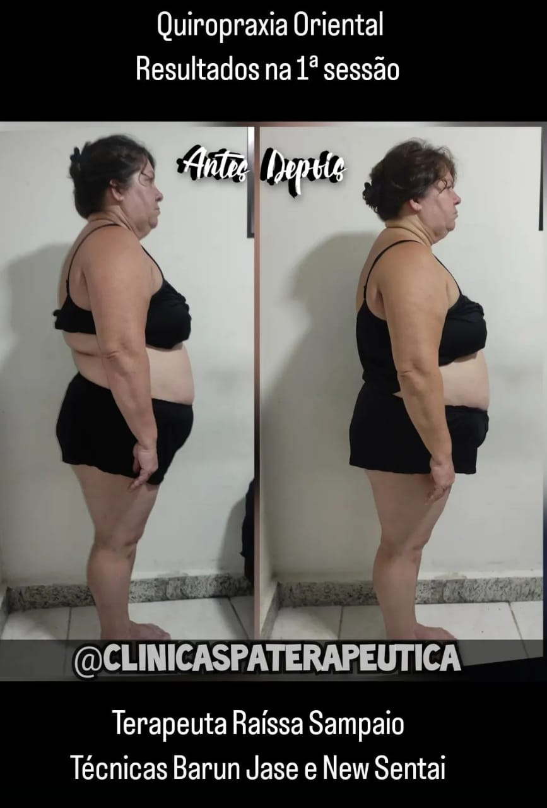

Home Care
Profissional dedicada à sua saúde e bem-estar, ofereço cuidados personalizados no meu espaço ou no conforto de sua casa. Com atenção e dedicação, garantimos a segurança e o conforto que você merece.
Benefícios: Atendimento personalizado, maior conforto, menor exposição a infecções hospitalares, recuperação mais rápida.
Tratamentos: Cuidados pós-cirúrgicos, monitoramento de condições crônicas, administração de medicamentos, cuidados com sondas.
Aplicação de Medicamentos

Com experiência e profissionalismo, administro medicamentos de forma correta e segura, proporcionando tranquilidade e confiança em cada atendimento.
Benefícios
- Administração precisa: A aplicação de medicamentos é feita de maneira precisa, garantindo a dosagem correta e a técnica apropriada para cada tipo de medicamento.
- Redução do risco de complicações: Com a administração correta, o risco de complicações é significativamente reduzido, proporcionando segurança ao paciente.
- Suporte profissional: Disponibilidade de suporte profissional para esclarecer dúvidas e monitorar a resposta ao tratamento.
Tratamentos Oferecidos
- Injeções Intramusculares e Subcutâneas: Aplicação de medicamentos diretamente no músculo ou sob a pele, conforme prescrição médica.
- Infusões Intravenosas: Administração de medicamentos diretamente na veia, ideal para tratamentos que requerem efeito rápido ou doses contínuas.
- Vacinação: Aplicação de vacinas para prevenção de doenças, seguindo o calendário vacinal e orientações médicas.
- Outros Tratamentos: Aplicação de diversos medicamentos conforme a necessidade do paciente e prescrição médica, abrangendo diferentes áreas da saúde.
Cuidados com Sondas
Ofereço cuidados especializados para pacientes que utilizam diferentes tipos de sondas, garantindo a manutenção adequada e a prevenção de complicações.
Benefícios
- Manutenção adequada: Cuidados precisos com sondas para garantir seu funcionamento correto e a segurança do paciente.
- Prevenção de infecções: Técnicas de higiene rigorosas para prevenir infecções e outras complicações associadas ao uso de sondas.
- Suporte contínuo: Disponibilidade de suporte para monitorar e ajustar o uso das sondas conforme necessário.
Serviços Oferecidos
- Sondagem Vesical: Inserção e manutenção de sondas vesicais para drenagem urinária, incluindo troca de sondas e cuidados com a higiene.
- Sonda de Alimentação: Cuidados com sondas nasoenterais ou gastrostomias, garantindo que o paciente receba a nutrição adequada.
- Sonda de Ostomia: Cuidados com estomas e sondas de ostomia, garantindo que o paciente tenha uma boa qualidade de vida e que seja realizado a limpeza e a manutenção adequada.
- Traqueostomia: Cuidados com sondas de traqueostomia, garantindo a permeabilidade da via aérea e a prevenção de infecções.
- Outros Cuidados com Sondas: Manutenção e cuidados com outros tipos de sondas conforme a necessidade do paciente e orientação médica.
Cuidados com Idosos e Crianças

Com carinho e dedicação, cuido dos seus entes queridos, oferecendo a atenção especial que idosos e crianças necessitam para uma vida saudável e feliz.
Benefícios: Atenção personalizada, suporte emocional, atividades de estimulação.
Tratamentos: Acompanhamento de rotina, administração de medicamentos, cuidados de higiene, suporte nutricional, entre outros.
Doula
Como profissional treinada, realizo serviços de doleira com excelência, garantindo que você receba o melhor cuidado e suporte.
Benefícios: Apoio emocional, acompanhamento durante o trabalho de parto, técnicas de alívio da dor.
Tratamentos: Assistência durante o parto, suporte pós-parto, educação sobre cuidados com o bebê.
Tratamentos Alternativos
✔ Massoterapias

 

A massoterapia utiliza técnicas de massagem para aliviar dores musculares, reduzir o estresse e promover o relaxamento.
- Ventosaterapia
- Pedras quentes
- Bambooterapia
- Massagem relaxante
- Drenagem linfática
Técnicas:
Benefícios: Redução do estresse, alívio da dor, melhoria da circulação, aumento da flexibilidade.
Problemas tratados: Dores musculares, tensões, ansiedade, dores de cabeça, entre outros.
✔ SPA dos Pés
O SPA dos pés proporciona cuidados especiais para os seus pés, incluindo tratamento em remoção de calos e rachaduras, esfoliação, hidratação e massagem.
Benefícios: Relaxamento, melhoria da circulação, alívio de dores e inchaço, cuidados com a pele.
Problemas tratados: Calos, rachaduras, pés cansados, má circulação.
✔ Quiropraxia
 

Utilizando técnicas de Quiropraxia Ocidental, como New Sentai e Barun Jase, ofereço tratamentos alternativos para promover seu bem-estar e saúde de forma natural e eficaz.
Benefícios: Alívio da dor, melhoria da postura, aumento da mobilidade, promoção da saúde geral.
Problemas tratados: Dores nas costas, estresse, depressão,dores no pescoço, bruxismo, problemas posturais.
© 2024 SPA Terapêutica. Todos os direitos reservados. Belo Horizonte/MG